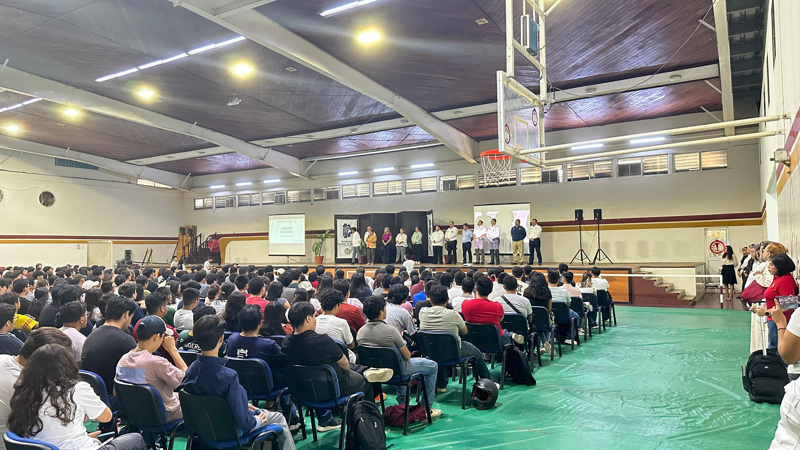

- 


Departamento de Desarrollo Académico
El Departamento de Desarrollo Académico es el área responsable de planear, coordinar y evaluar las actividades que fortalecen la formación integral de los estudiantes y el desarrollo profesional de los docentes.